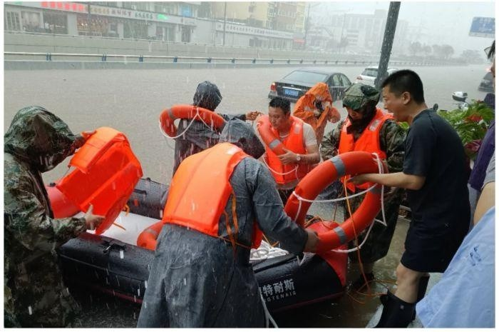

7月20日至21日，郑州遭遇特大暴雨，单日降雨量突破历史极值，
根据省、市防汛救灾工作部署，二七区迅速行动，启动Ⅰ级防汛应急响应，
成立 “抗洪抢险应急工作小组”，组织各方力量迅速投入抢险救援中。
中国自古便是最善良的人
7月20日下午3点，在一马路街道陇海大院社区，因部分楼院积水严重，
社区书记孙强紧急带领工作人员逐户劝离群众，第一时间将9户
被困群众转移至社区办公场所，并安排工作人员进行照看。
